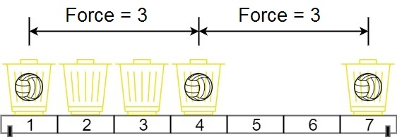

[TOC]
算法这东西，可以说玄之又玄，大学就被程序设计这门课统治，工作了，虽然说这东西在实践中用到的少，但是谁让大家都卷呢，你不会就是不行，所以本着打不赢就加入的原则，自己也刷了不少题，今天作下总结。
算法复杂度
算法的复杂度，其实就是分为时间复杂度和空间复杂度，比如O(1)、O(logn)、O(n)、O(nlogn)、O(n^2) 等等
时间复杂度
算法的时间复杂度（Time complexity）是一个函数，它定性描述该算法的运行时间。这是一个代表算法输入值的字符串的长度的函数。时间复杂度常用大O符号表述，不包括这个函数的低阶项和首项系数，例如。
O(2*n^2 + 10*n + 1000) = O(2*n^2 + 10*n) = O(n^2 + n) = O(n^2)
各个时间复杂度的例子
常见时间复杂度 O(1)常数阶 < O(log n)对数阶 < O(n)线性阶 < O(n^2)平方阶 < O(n^3)立方阶 < O(2^n)指数阶
package com.zt.javastudy.leetcode;
/**
* @author zhengtao
* 算法复杂度分析
*/
public class Time {
/**
* 0(n) 时间复杂度,一个循环
*/
public void test1(int[] nums) {
for (int i = 0; i < nums.length; i++) {
System.out.println(nums[i]);
}
}
/**
* O(log n)，对数时间,常见的具有对数时间的算法有二叉树的相关操作和二分搜索。
* 可以理解为每次都缩小了一半
*/
public int binary_search(int[] nums, int target) {
int left = 0, right = nums.length - 1;
while (left <= right) {
int mid = left + (right - left) / 2;
if (nums[mid] < target) {
left = mid + 1;
} else if (nums[mid] > target) {
right = mid - 1;
} else if (nums[mid] == target) {
// 直接返回
return mid;
}
}
// 直接返回
return -1;
}
/**
* o(nlogn),内循环是O(log n)
*/
public void function3(long n) {
System.out.println("o(nlogn)算法");
long k = 0;
for (long i = 0; i < n; i++) {
// O(log n)
for (long j = 1; j < n; j = j * 2) {
k++;
}
}
}
/**
* o(n^2),两层循环
*
* @param n
*/
public static void function2(long n) {
System.out.println("o(n^2)算法");
long k = 0;
for (long i = 0; i < n; i++) {
for (long j = 0; j < n; j++) {
k++;
}
}
}
}
数组
数组的题目其实算是比较简单的，一是数组是最熟悉的数据结构，二是数组的题目不需要用到一些算法（贪心、回溯、递归等等），数组常见类型的题目有：
- 二分查找
- 滑动窗口
- 双指针
下面将从自己刷过题中按这几个题型来总结
二分查找
二分查找的题目其实很简单，二分法都很熟了，二分查找的核心就是找到具有单调性的正确查找对象，但是涉及到二分查找的问题，主要是注意**「搜索区间」和 while 的终止条件**，目前自己全部是采用两端都闭合的搜索区间，有关二分查找的题目又可以分为以下三种类型
-
直接二分搜索（最简单）
public int binary_search(int[] nums, int target) { // 左边界为0， 右边界为数组最后一个数 int left = 0, right = nums.length - 1; // 结束条件为 <= while (left <= right) { int mid = left + (right - left) / 2; if (nums[mid] < target) { left = mid + 1; } else if (nums[mid] > target) { right = mid - 1; } else if (nums[mid] == target) { // 直接返回 return mid; } } // 直接返回 return -1; } -
查找最左边界
/** * 查找最左边界， * 因为我们需找到 target 的最左侧索引 * 所以当 nums[mid] == target 时不要立即返回 * 而要收紧右侧边界以锁定左侧边界 * * @param nums * @param target * @return */ public int left_bound(int[] nums, int target) { int left = 0, right = nums.length - 1; while (left <= right) { int mid = left + (right - left) / 2; if (nums[mid] >= target) { right = mid - 1; } else { left = mid + 1; } } // 最后要检查 left 越界的情况 if (left >= nums.length || nums[left] != target) return -1; return left; } -
寻找右边界
/** * 寻找最右边界 * 因为我们需找到 target 的最右侧索引 * 所以当 nums[mid] == target 时不要立即返回 * 而要收紧左侧边界以锁定右侧边界 * * @param nums * @param target * @return */ public int right_bound(int[] nums, int target) { int left = 0, right = nums.length - 1; while (left <= right) { int mid = left + (right - left) / 2; if (nums[mid] <= target) { left = mid + 1; } else { right = mid - 1; } } // 最后要检查 right 越界的情况 if (right < 0 || nums[right] != target) return -1; return right; }
总结完这三种类型的题目后，就是套题目了，其实做题最难的也是这一步，遇到什么题该用什么方法，对我这种不是完全理解各种算法的人来说是很难的，所以只能靠量取胜哈哈
875. 爱吃香蕉的珂珂
珂珂喜欢吃香蕉。这里有 N 堆香蕉，第 i 堆中有 piles[i] 根香蕉。警卫已经离开了，将在 H 小时后回来。
珂珂可以决定她吃香蕉的速度 K （单位：根/小时）。每个小时，她将会选择一堆香蕉，从中吃掉 K 根。如果这堆香蕉少于 K 根，她将吃掉这堆的所有香蕉，然后这一小时内不会再吃更多的香蕉。
珂珂喜欢慢慢吃，但仍然想在警卫回来前吃掉所有的香蕉。
返回她可以在 H 小时内吃掉所有香蕉的最小速度 K（K 为整数）。
示例 1：
输入: piles = [3,6,7,11], H = 8
输出: 4
示例 2：
输入: piles = [30,11,23,4,20], H = 5
输出: 30
示例 3：
输入: piles = [30,11,23,4,20], H = 6
输出: 23
提示：
1 <= piles.length <= 10^4piles.length <= H <= 10^91 <= piles[i] <= 10^9
这道题可以理解为，每小时最少吃1，最大吃getMax(piles),求的就是从1开始，能吃完的最小速度是多少？再联想这其实就是求最左边界，于是可以用二分法来做
/**
暴力做法，直接遍历
*/
public int minEatingSpeed(int[] piles, int h) {
int max = getMax(piles);
// 可以用二分法代替
for (int speed = 1; speed <= max; speed++) {
if (canEat(piles, speed, h)) {
return speed;
}
}
return max;
}
/**
二分法求最左边界，标准代码
*/
public int minEatingSpeed1(int[] piles, int h) {
int left = 1, right = getMax(piles);
while (left <= right) {
int middle = (left + right) / 2;
if (canEat(piles, middle, h)) {
right = middle - 1;
} else {
left = middle + 1;
}
}
return left;
}
private boolean canEat(int[] piles, int speed, int h) {
int time = 0;
for (int i : piles) {
if (i % speed == 0) {
time += i / speed;
} else {
time += i / speed + 1;
}
}
return time <= h;
}
private int getMax(int[] piles) {
int max = 0;
for (int i : piles) {
max = Math.max(max, i);
}
return max;
}
1011. 在 D 天内送达包裹的能力
传送带上的包裹必须在 days 天内从一个港口运送到另一个港口。
传送带上的第 i 个包裹的重量为 weights[i]。每一天，我们都会按给出重量（weights）的顺序往传送带上装载包裹。我们装载的重量不会超过船的最大运载重量。
返回能在 days 天内将传送带上的所有包裹送达的船的最低运载能力。
示例 1：
输入：weights = [1,2,3,4,5,6,7,8,9,10], days = 5
输出：15
解释：
船舶最低载重 15 就能够在 5 天内送达所有包裹，如下所示：
第 1 天：1, 2, 3, 4, 5
第 2 天：6, 7
第 3 天：8
第 4 天：9
第 5 天：10
请注意，货物必须按照给定的顺序装运，因此使用载重能力为 14 的船舶并将包装分成 (2, 3, 4, 5), (1, 6, 7), (8), (9), (10) 是不允许的。
示例 2：
输入：weights = [3,2,2,4,1,4], days = 3
输出：6
解释：
船舶最低载重 6 就能够在 3 天内送达所有包裹，如下所示：
第 1 天：3, 2
第 2 天：2, 4
第 3 天：1, 4
示例 3：
输入：weights = [1,2,3,1,1], D = 4
输出：3
解释：
第 1 天：1
第 2 天：2
第 3 天：3
第 4 天：1, 1
提示：
1 <= days <= weights.length <= 5 * 1041 <= weights[i] <= 500
这题很显然，跟上面一题很相似,最低运载能力 x 从1开始到sum(weights)结束，求最小的x，这明显就是二分法求最左边界
public int shipWithinDays(int[] weights, int days) {
int left = 1, right = sum(weights);
while (left <= right) {
int middle = (left + right) / 2;
if (canWeight(weights, middle, days)) {
right = middle - 1;
} else {
left = middle + 1;
}
}
return left;
}
private boolean canWeight(int[] weights, int middle, int days) {
int sum = 0;
for (int i : weights) {
if (i > middle) {
return false;
}
if (sum + i > middle) {
days--;
sum = i;
} else {
sum += i;
}
}
return days > 0;
}
private int sum(int[] weights) {
int sum = 0;
for (int i : weights) {
sum += i;
}
return sum;
}
410. 分割数组的最大值
给定一个非负整数数组 nums 和一个整数 m ，你需要将这个数组分成 m 个非空的连续子数组。
设计一个算法使得这 m 个子数组各自和的最大值最小。
示例 1：
输入：nums = [7,2,5,10,8], m = 2
输出：18
解释：
一共有四种方法将 nums 分割为 2 个子数组。
其中最好的方式是将其分为 [7,2,5] 和 [10,8] 。
因为此时这两个子数组各自的和的最大值为18，在所有情况中最小。
示例 2：
输入：nums = [1,2,3,4,5], m = 2
输出：9
示例 3：
输入：nums = [1,4,4], m = 3
输出：4
提示：
1 <= nums.length <= 10000 <= nums[i] <= 1061 <= m <= min(50, nums.length)
这题目一开始看跟二分法完全不沾边，但是仔细想想跟上面两个有类似之处，「使……最大值尽可能小」，这就和二分法差不多了。
思路为：现在题目是固定了m的值，让我们确定一个最大子数组和；我们可以反过来，限制一个最大子数组和max，来反推最大子数组和为max时，至少可以将nums分割成几个子数组。因此思路就转为，如果我们找到一个最小max值，满足split(nums, max)和m相等，这个就又是寻找最左边界了，就跟上面两题一样了，前面说过二分法最重要的就是搜索区间，那这个的搜索区间是什么呢？显然，子数组至少包含一个元素，至多包含整个数组，所以「最大」子数组和的取值范围就是闭区间[max(nums), sum(nums)]，也就是最大元素值到整个数组和之间。
public int splitArray(int[] nums, int m) {
int left = Arrays.stream(nums).max().getAsInt(), right = Arrays.stream(nums).sum();
while (left <= right) {
int middle = (left + right) / 2;
if (spiltNums(nums, middle) <= m) {
right = middle - 1;
} else {
left = middle + 1;
}
}
return left;
}
/**
* 在每个子数组和不超过 max 的条件下，
* 计算 nums 至少可以分割成几个子数组
*
* @param nums
* @param max
* @return
*/
public int spiltNums(int[] nums, int max) {
int n = 0;
int sum = 0;
for (int i : nums) {
if (sum + i > max) {
sum = i;
n++;
} else {
sum += i;
}
}
return n + 1;
}
12. 小张刷题计划
为了提高自己的代码能力，小张制定了 LeetCode 刷题计划，他选中了 LeetCode 题库中的 n 道题，编号从 0 到 n-1，并计划在 m 天内按照题目编号顺序刷完所有的题目（注意，小张不能用多天完成同一题）。
在小张刷题计划中，小张需要用 time[i] 的时间完成编号 i 的题目。此外，小张还可以使用场外求助功能，通过询问他的好朋友小杨题目的解法，可以省去该题的做题时间。为了防止“小张刷题计划”变成“小杨刷题计划”，小张每天最多使用一次求助。
我们定义 m 天中做题时间最多的一天耗时为 T（小杨完成的题目不计入做题总时间）。请你帮小张求出最小的 T是多少。
示例 1：
输入：
time = [1,2,3,3], m = 2输出：
3解释：第一天小张完成前三题，其中第三题找小杨帮忙；第二天完成第四题，并且找小杨帮忙。这样做题时间最多的一天花费了 3 的时间，并且这个值是最小的。
示例 2：
输入：
time = [999,999,999], m = 4输出：
0解释：在前三天中，小张每天求助小杨一次，这样他可以在三天内完成所有的题目并不花任何时间。
限制：
1 <= time.length <= 10^51 <= time[i] <= 100001 <= m <= 1000
这题看起来和上面一题就是一模一样的，从0到sum(time),求最左边界
public int minTime(int[] time, int m) {
int left = 0;
int right = Arrays.stream(time).sum();
while (left <= right) {
int middle = (left + right) / 2;
if (spiltTime(time, middle) <= m) {
right = middle - 1;
} else {
left = middle + 1;
}
}
return left;
}
/**
* 在每个子数组和不超过 max 的条件下，
* 计算 nums 至少可以分割成几个子数组
*
* @param nums
* @param max
* @return
*/
public int spiltTime(int[] nums, int max) {
int n = 0;
int sum = 0;
int time = 0;
for (int i : nums) {
if (time < i) {
time = i;
}
if (sum + i > max + time) {
sum = i;
n++;
time = i;
} else {
sum += i;
}
}
return n + 1;
}
1482. 制作 m 束花所需的最少天数
给你一个整数数组 bloomDay，以及两个整数 m 和 k 。
现需要制作 m 束花。制作花束时，需要使用花园中 相邻的 k 朵花 。
花园中有 n 朵花，第 i 朵花会在 bloomDay[i] 时盛开，恰好 可以用于 一束 花中。
请你返回从花园中摘 m 束花需要等待的最少的天数。如果不能摘到 m 束花则返回 -1 。
示例 1：
输入：bloomDay = [1,10,3,10,2], m = 3, k = 1
输出：3
解释：让我们一起观察这三天的花开过程，x 表示花开，而 _ 表示花还未开。
现在需要制作 3 束花，每束只需要 1 朵。
1 天后：[x, _, _, _, _] // 只能制作 1 束花
2 天后：[x, _, _, _, x] // 只能制作 2 束花
3 天后：[x, _, x, _, x] // 可以制作 3 束花，答案为 3
示例 2：
输入：bloomDay = [1,10,3,10,2], m = 3, k = 2
输出：-1
解释：要制作 3 束花，每束需要 2 朵花，也就是一共需要 6 朵花。而花园中只有 5 朵花，无法满足制作要求，返回 -1 。
示例 3：
输入：bloomDay = [7,7,7,7,12,7,7], m = 2, k = 3
输出：12
解释：要制作 2 束花，每束需要 3 朵。
花园在 7 天后和 12 天后的情况如下：
7 天后：[x, x, x, x, _, x, x]
可以用前 3 朵盛开的花制作第一束花。但不能使用后 3 朵盛开的花，因为它们不相邻。
12 天后：[x, x, x, x, x, x, x]
显然，我们可以用不同的方式制作两束花。
示例 4：
输入：bloomDay = [1000000000,1000000000], m = 1, k = 1
输出：1000000000
解释：需要等 1000000000 天才能采到花来制作花束
示例 5：
输入：bloomDay = [1,10,2,9,3,8,4,7,5,6], m = 4, k = 2
输出：9
提示：
bloomDay.length == n1 <= n <= 10^51 <= bloomDay[i] <= 10^91 <= m <= 10^61 <= k <= n
这题也是一样的，二分法最左边界就完事了
public int minDays(int[] bloomDay, int m, int k) {
int left = Arrays.stream(bloomDay).min().getAsInt(), right = Arrays.stream(bloomDay).max().getAsInt(), max = right;
if (bloomDay.length < m * k) {
return -1;
}
while (left <= right) {
int middle = (left + right) / 2;
if (bloom(bloomDay, m, k, middle)) {
right = middle - 1;
} else {
left = middle + 1;
}
}
if (left > max) {
return -1;
}
return left;
}
public boolean bloom(int[] bloomDay, int m, int k, int day) {
int sum = 0;
for (int i : bloomDay) {
if (i > day) {
sum = 0;
} else {
sum++;
if (sum >= k) {
sum = 0;
m--;
}
}
}
return m <= 0;
}
1552. 两球之间的磁力
在代号为 C-137 的地球上，Rick 发现如果他将两个球放在他新发明的篮子里，它们之间会形成特殊形式的磁力。Rick 有 n 个空的篮子，第 i 个篮子的位置在 position[i] ，Morty 想把 m 个球放到这些篮子里，使得任意两球间 最小磁力 最大。
已知两个球如果分别位于 x 和 y ，那么它们之间的磁力为 |x - y| 。
给你一个整数数组 position 和一个整数 m ，请你返回最大化的最小磁力。
示例 1：

输入：position = [1,2,3,4,7], m = 3
输出：3
解释：将 3 个球分别放入位于 1，4 和 7 的三个篮子，两球间的磁力分别为 [3, 3, 6]。最小磁力为 3 。我们没办法让最小磁力大于 3 。
示例 2：
输入：position = [5,4,3,2,1,1000000000], m = 2
输出：999999999
解释：我们使用位于 1 和 1000000000 的篮子时最小磁力最大。
提示：
n == position.length2 <= n <= 10^51 <= position[i] <= 10^9- 所有
position中的整数 互不相同 。 2 <= m <= position.length
这题和上面的也都是一样的，最小磁力为x，取值范围为[1，max(position) -min(position)]，但这题是二分搜索最右边界
public int maxDistance(int[] position, int m) {
// 先排序，好求最小距离
Arrays.sort(position);
int length = position.length;
int left = 0, right = position[length - 1] - position[0];
while (left <= right) {
int middle = (left + right) / 2;
// 求最右边界
if (distance(position, middle) >= m) {
left = middle + 1;
} else {
right = middle - 1;
}
}
return right;
}
/**
* 最小磁力 为 n时，最多可以分为几段
*
* @param position
* @param n
* @return
*/
public int distance(int[] position, int n) {
int min = position[0];
int difference = 0;
int nums = 0;
for (int i : position) {
difference = i - min;
if (difference >= n) {
min = i;
nums++;
}
}
return nums + 1;
}
29. 两数相除
给定两个整数，被除数 dividend 和除数 divisor。将两数相除，要求不使用乘法、除法和 mod 运算符。
返回被除数 dividend 除以除数 divisor 得到的商。
整数除法的结果应当截去（truncate）其小数部分，例如：truncate(8.345) = 8 以及 truncate(-2.7335) = -2
示例 1:
输入: dividend = 10, divisor = 3
输出: 3
解释: 10/3 = truncate(3.33333..) = truncate(3) = 3
示例 2:
输入: dividend = 7, divisor = -3
输出: -2
解释: 7/-3 = truncate(-2.33333..) = -2
提示：
- 被除数和除数均为 32 位有符号整数。
- 除数不为 0。
- 假设我们的环境只能存储 32 位有符号整数，其数值范围是 [−231, 231 − 1]。本题中，如果除法结果溢出，则返回 231 − 1。
这题其实很明显，不过需要特殊处理，dividend 和 divisor 均有「正数」和「负数」两种可能，当且仅当其中一者为负数时，结果为负，为了方便，我们可以先记录最终结果的正负号，然后将 dividend 和 divisor 都当成正数来处理；dividend 和 divisor 均为 int，可以确定答案的绝对值落在 [0, dividend] 范围内）；
public int divide(int dividend, int divisor) {
// 考虑被除数为最小值的情况
if (dividend == Integer.MIN_VALUE) {
if (divisor == 1) {
return Integer.MIN_VALUE;
}
if (divisor == -1) {
return Integer.MAX_VALUE;
}
}
// 考虑除数为最小值的情况
if (divisor == Integer.MIN_VALUE) {
return dividend == Integer.MIN_VALUE ? 1 : 0;
}
// 考虑被除数为 0 的情况
if (dividend == 0) {
return 0;
}
// 一般情况，使用二分查找
// 将所有的正数取相反数，这样就只需要考虑一种情况
boolean rev = false;
if (dividend > 0) {
dividend = -dividend;
rev = !rev;
}
if (divisor > 0) {
divisor = -divisor;
rev = !rev;
}
int left = 1, right = Integer.MAX_VALUE, ans = 0;
while (left <= right) {
// 注意溢出，并且不能使用除法
int mid = left + ((right - left) >> 1);
boolean check = quickAdd(divisor, mid, dividend);
if (check) {
ans = mid;
// 注意溢出
if (mid == Integer.MAX_VALUE) {
break;
}
left = mid + 1;
} else {
right = mid - 1;
}
}
return rev ? -ans : ans;
}
// 快速乘 这个没搞懂是什么意思
public boolean quickAdd(int y, int z, int x) {
// x 和 y 是负数，z 是正数
// 需要判断 z * y >= x 是否成立
int result = 0, add = y;
while (z != 0) {
if ((z & 1) != 0) {
// 需要保证 result + add >= x
if (result < x - add) {
return false;
}
result += add;
}
if (z != 1) {
// 需要保证 add + add >= x
if (add < x - add) {
return false;
}
add += add;
}
// 不能使用除法
z >>= 1;
}
return true;
}
33. 搜索旋转排序数组
整数数组 nums 按升序排列，数组中的值 互不相同 。
在传递给函数之前，nums 在预先未知的某个下标 k（0 <= k < nums.length）上进行了 旋转，使数组变为 [nums[k], nums[k+1], ..., nums[n-1], nums[0], nums[1], ..., nums[k-1]]（下标 从 0 开始 计数）。例如， [0,1,2,4,5,6,7] 在下标 3 处经旋转后可能变为 [4,5,6,7,0,1,2] 。
给你 旋转后 的数组 nums 和一个整数 target ，如果 nums 中存在这个目标值 target ，则返回它的下标，否则返回 -1 。
示例 1：
输入：nums = [4,5,6,7,0,1,2], target = 0
输出：4
示例 2：
输入：nums = [4,5,6,7,0,1,2], target = 3
输出：-1
示例 3：
输入：nums = [1], target = 0
输出：-1
提示：
1 <= nums.length <= 5000-10^4 <= nums[i] <= 10^4nums中的每个值都 独一无二- 题目数据保证
nums在预先未知的某个下标上进行了旋转 -10^4 <= target <= 10^4
**进阶：**你可以设计一个时间复杂度为 O(log n) 的解决方案吗？
这题一看就像二分法，数组在旋转前是有序的，旋转后变成 了两部分有序数组，因此对二分法稍作变形即可，我们将数组从中间分开成左右两部分的时候，一定有一部分的数组是有序的。拿示例来看，我们从 6 这个位置分开以后数组变成了 [4, 5, 6] 和 [7, 0, 1, 2] 两个部分，其中左边 [4, 5, 6] 这个部分的数组是有序的，其他也是如此。 这启示我们可以在常规二分查找的时候查看当前 mid 为分割位置分割出来的两个部分 [l, mid] 和 [mid + 1, r] 哪个部分是有序的，并根据有序的那个部分确定我们该如何改变二分查找的上下界，因为我们能够根据有序的那部分判断出 target 在不在这个部分：
- 如果 [l, mid - 1] 是有序数组，且 target 的大小满足 [nums[l],nums[mid])，则我们应该将搜索范围缩小至 [l, mid - 1]，否则在 [mid + 1, r] 中寻找。
- 如果 [mid, r] 是有序数组，且 target 的大小满足 (nums[mid+1],nums[r]]，则我们应该将搜索范围缩小至 [mid + 1, r]，否则在 [l, mid - 1] 中寻找。
public int search2(int[] nums, int target) {
int left = 0, right = nums.length - 1;
while (left <= right) {
int midlle = (left + right) / 2;
if (nums[midlle] == target) {
return midlle;
}
// 左半段为有序数组
if (nums[0] <= nums[midlle]) {
if (target >= nums[0] && target < nums[midlle]) {
right = midlle - 1;
} else {
left = midlle + 1;
}
} else {
if (target > nums[midlle] && target <= nums[nums.length - 1]) {
left = midlle + 1;
} else {
right = midlle - 1;
}
}
}
return -1;
}
81. 搜索旋转排序数组 II
已知存在一个按非降序排列的整数数组 nums ，数组中的值不必互不相同。
在传递给函数之前，nums 在预先未知的某个下标 k（0 <= k < nums.length）上进行了 旋转 ，使数组变为 [nums[k], nums[k+1], ..., nums[n-1], nums[0], nums[1], ..., nums[k-1]]（下标 从 0 开始 计数）。例如， [0,1,2,4,4,4,5,6,6,7] 在下标 5 处经旋转后可能变为 [4,5,6,6,7,0,1,2,4,4] 。
给你 旋转后 的数组 nums 和一个整数 target ，请你编写一个函数来判断给定的目标值是否存在于数组中。如果 nums 中存在这个目标值 target ，则返回 true ，否则返回 false 。
你必须尽可能减少整个操作步骤。
示例 1：
输入：nums = [2,5,6,0,0,1,2], target = 0
输出：true
示例 2：
输入：nums = [2,5,6,0,0,1,2], target = 3
输出：false
提示：
1 <= nums.length <= 5000-104 <= nums[i] <= 104- 题目数据保证
nums在预先未知的某个下标上进行了旋转 -104 <= target <= 104
这题和上一题唯一的区别就是，数组元素可以重复，对于数组中有重复元素的情况，二分查找时可能会有a[l]=a[mid]=a[r]，此时无法判断[l, mid] 和 [mid + 1, r]哪个有序
例如 nums=[3,1,2,3,3,3,3]，target=2，首次二分时无法判断区间 [0,3] 和区间 [4,6] 哪个是有序的。
对于这种情况，我们只能将当前二分区间的左边界加一，右边界减一，然后在新区间上继续二分查找。
public boolean search(int[] nums, int target) {
int left = 0, right = nums.length - 1;
while (left <= right) {
int midlle = (left + right) / 2;
if (nums[midlle] == target) {
return true;
}
// 特殊处理，31313这种情形
if(nums[left] == nums[midlle] && nums[right] == nums[midlle]) {
left++;
right--;
}
// 左半段为有序数组
else if (nums[left] <= nums[midlle]) {
if (target >= nums[left] && target < nums[midlle]) {
right = midlle - 1;
} else {
left = midlle + 1;
}
} else {
if (target > nums[midlle] && target <= nums[right]) {
left = midlle + 1;
} else {
right = midlle - 1;
}
}
}
return false;
}
面试题 10.03. 搜索旋转数组
搜索旋转数组。给定一个排序后的数组，包含n个整数，但这个数组已被旋转过很多次了，次数不详。请编写代码找出数组中的某个元素，假设数组元素原先是按升序排列的。若有多个相同元素，返回索引值最小的一个。
示例1:
输入: arr = [15, 16, 19, 20, 25, 1, 3, 4, 5, 7, 10, 14], target = 5
输出: 8（元素5在该数组中的索引）
示例2:
输入：arr = [15, 16, 19, 20, 25, 1, 3, 4, 5, 7, 10, 14], target = 11
输出：-1 （没有找到）
提示:
- arr 长度范围在[1, 1000000]之间
这题和上一题，几乎是一模一样，但是要求返回最左边界
int n = arr.length;
int l = 0, r = n - 1;
while (l <= r) {
int mid = (l + r) / 2;
if (arr[l] == arr[mid]) {
// 如果左值不等于目标，说明还没找到，需要逐一清理重复值。
if (arr[l] != target) {
l++;
} else {
return l;
}
} else if (arr[l] < arr[mid]) {
if (arr[l] <= target && target <= arr[mid]) {
r = mid - 1;
} else {
l = mid + 1;
}
} else {
// 如果目标在左边，右边界移动到mid,这里判断跟上面不一样是因为，需要求最左边界，所以需要求的是不符合在右边区间的
if (arr[l] <= target || target <= arr[mid]) {
r = mid - 1;
} else {
// 否则目标在右半边，左边界移动到mid+1
l = mid + 1;
}
}
}
if (l >= n || arr[l] != target) {
return -1;
}
return l;